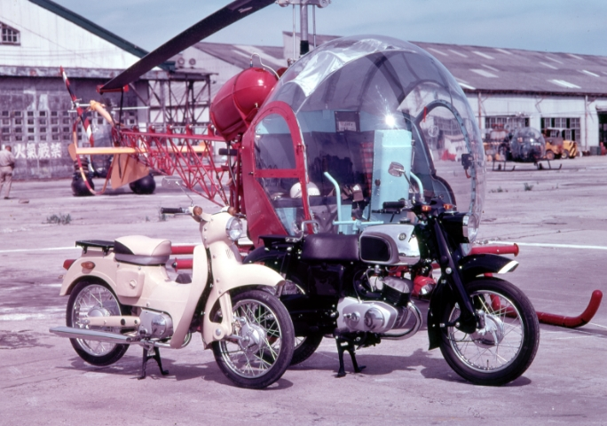
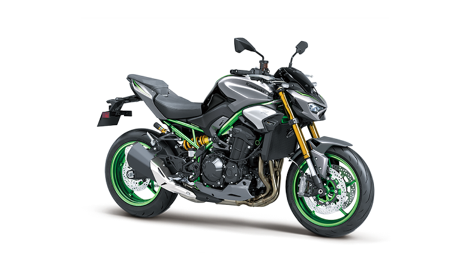
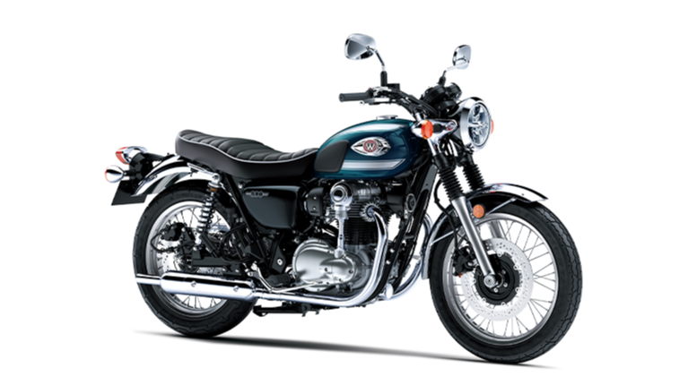

Los Orígenes de la Marca
Todo comenzó en 1896 cuando Shozo Kawasaki fundó un astillero. Mucho antes de las motocicletas, la empresa construía barcos, trenes y aviones, forjando un legado de ingeniería de alta tecnología.
Evolución hacia la Velocidad
Fue en la década de 1960 cuando Kawasaki aplicó sus conocimientos aeroespaciales para crear motores potentes y fabricar sus primeras motocicletas, cambiando la industria para siempre.
1962
Nace su primera moto (B8 125cc)
1968
Adopción del color Verde Lima
1984
Nace la icónica familia Ninja
El mito del "Verde Kawasaki"
En 1968, para destacar en la pista de Daytona y desafiar las supersticiones que decían que el verde daba mala suerte en las carreras, Kawasaki pintó sus motos de un color estridente. Hoy, ese "Lime Green" es el sello inconfundible de la marca.
Además de motos, Kawasaki Heavy Industries fabrica trenes bala (Shinkansen), helicópteros, barcos e incluso robots industriales y piezas para los aviones Boeing.
Ingeniería Japonesa
Ninja ZX-6R

La Ninja ZX-6R es una de las motos deportivas de peso medio más icónicas y exitosas de Kawasaki desde su debut en 1995. Destaca históricamente por romper las reglas de su categoría con su famoso motor de 636 cc, ofreciendo mayor potencia y par motor en calle que sus rivales tradicionales de 600 cc.
Kawasaki Z900

La Z900 se ha convertido en un ícono moderno desde su lanzamiento en 2017 como la máxima representante de la filosofía de diseño Sugomi de Kawasaki. Aunque es más joven que la ZX-6R, es la heredera espiritual del legendario linaje "Z" (iniciado por la mítica Z1 de 1972) y es una de las motos naked de cuatro cilindros más vendidas e influyentes en el mundo por su equilibrio entre potencia bruta, agilidad y precio.
Kawasaki W800

La W800 representa el ícono de la nostalgia y la herencia clásica pura de Kawasaki. Es el homenaje moderno directo a la legendaria W1 de 1966, la motocicleta que impulsó el crecimiento global de la marca y sentó las bases de sus modelos de gran cilindrada.